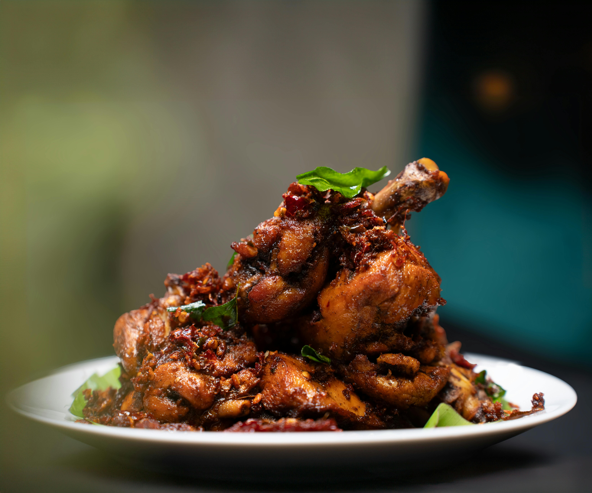

A tasty version of drumsticks with a bit of sweetness and spiciness. Thai sweet chili sauce adds an Asian flair.
In a large bowl, mix together the honey, sweet chili sauce and soy sauce. Set aside a small dish of the marinade for basting. Place chicken drumsticks into the bowl. Cover and refrigerate at least 1 hour.
Preheat an outdoor grill for medium-high heat.
Lightly oil the grill grate. Arrange drumsticks on the grill. Cook for 10 minutes per side, or until juices run clear. Baste frequently with the reserved sauce during the last 5 minutes.